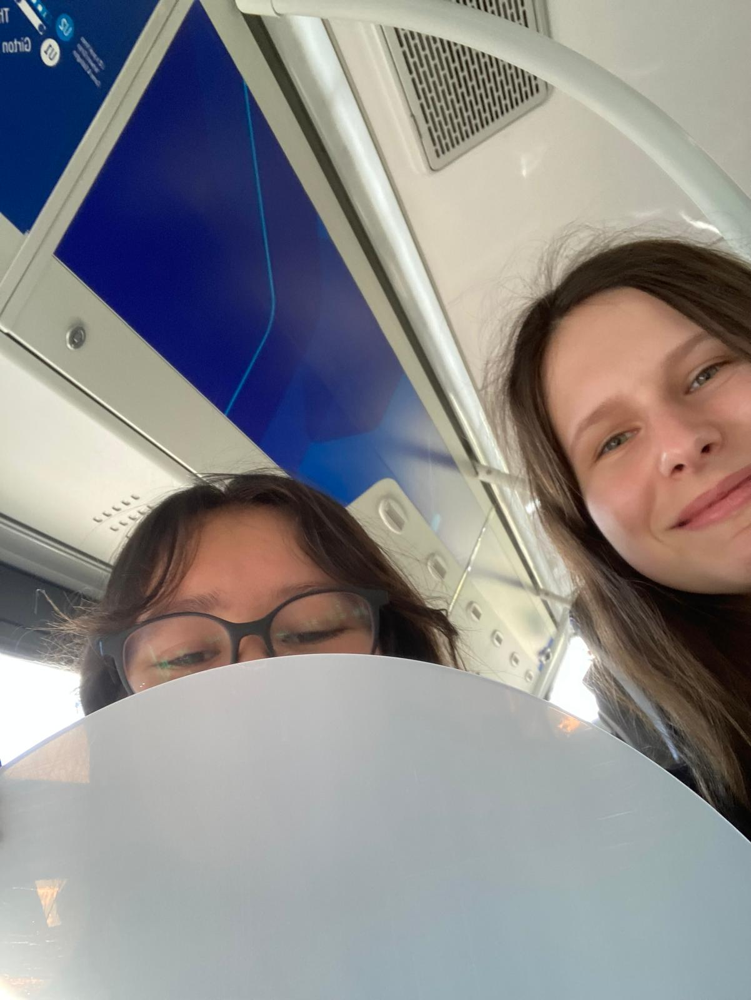
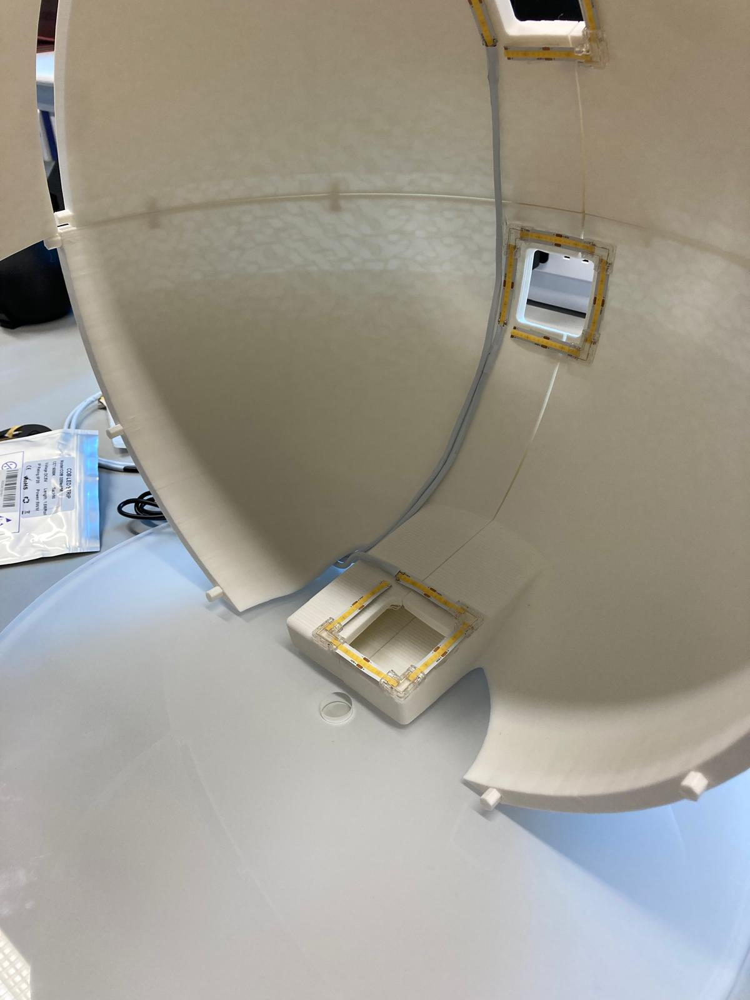
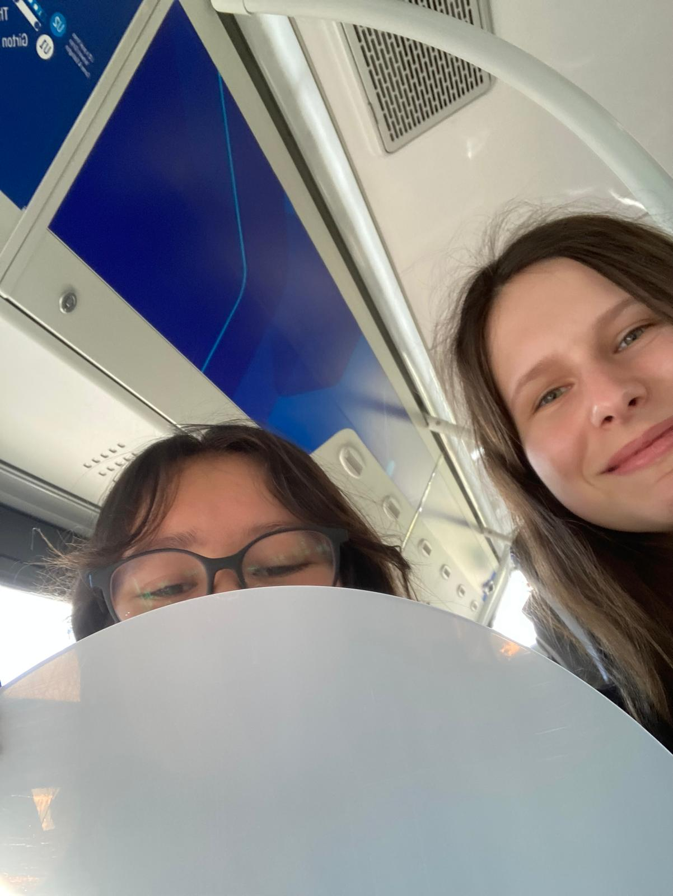
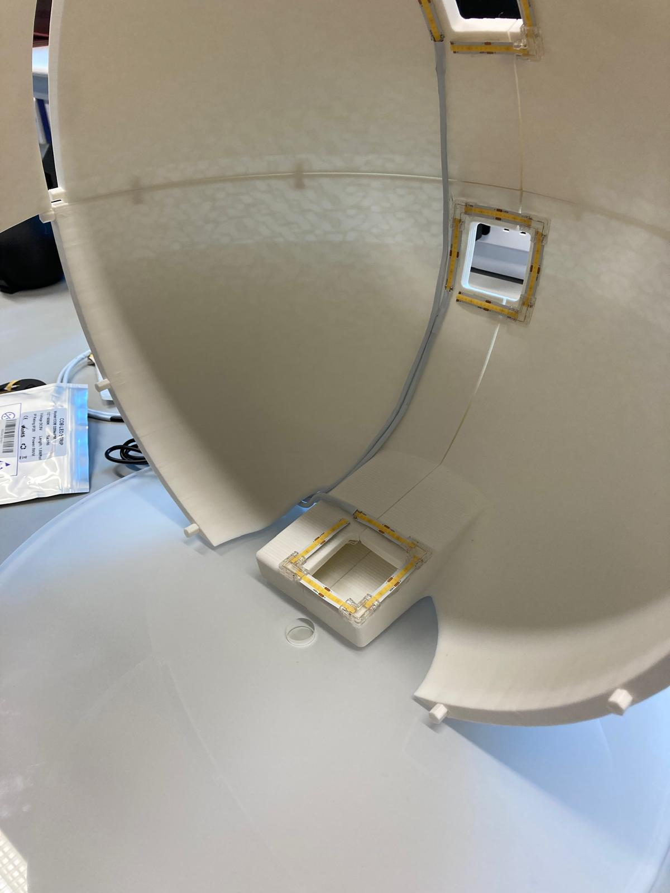
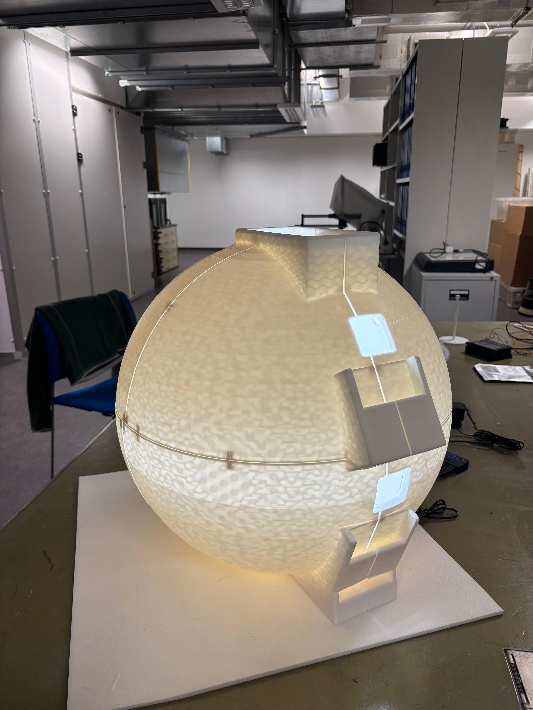
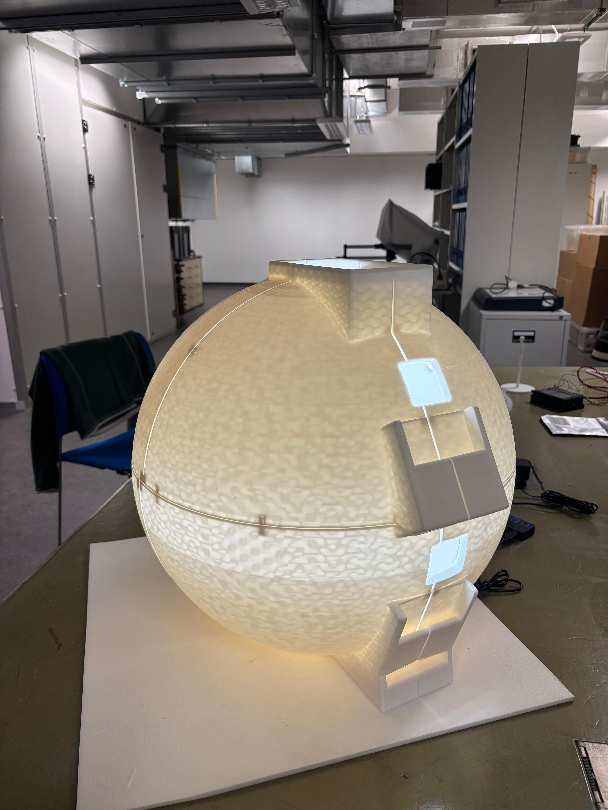

Weeknote 22/09/25
Laser cutting turntable plate
We decided on cutting a disc from clear plastic to use as our turntable plate, and then applying a matte white coating to it, as this was significantly cheaper. Tom, the department hardware specialist, was able to do the actual cutting for us.
 



LED setup
The nano tape has been delivered, so the USB wiring and LED strips can now be permanently fixed on the dome. Cable tape was used to wrap the black wires, and nano tape was used to hold both the cables and the LED strips in position.

Motor
Ari is configuring a stepper motor to be used with the DM556 microstep driver and a Raspberry Pi to control the rotation of the dome. She connected the components, and we had a power supply for the components delivered on Thursday. The gears connecting to the motor are printed and tested with this setup.
Printing
Anna has printed the smaller gears that form our turntable, and she’s been printing the remaining parts of our dome and turntable during the course of this week. There were some issues with the dome slices toppling over when nearing the end of a print, but she managed to fix the issue. The dome is now complete, and the last piece is secured with magnets for easy removal/installation.
 


Insect corner
Insect fact of the week: An interesting fact about the caterpillars in the insect collection is how they got to be this big! To ensure they don’t dry and shrivel up, the collector had to suck out their insides and blow them up to give them that shape :P